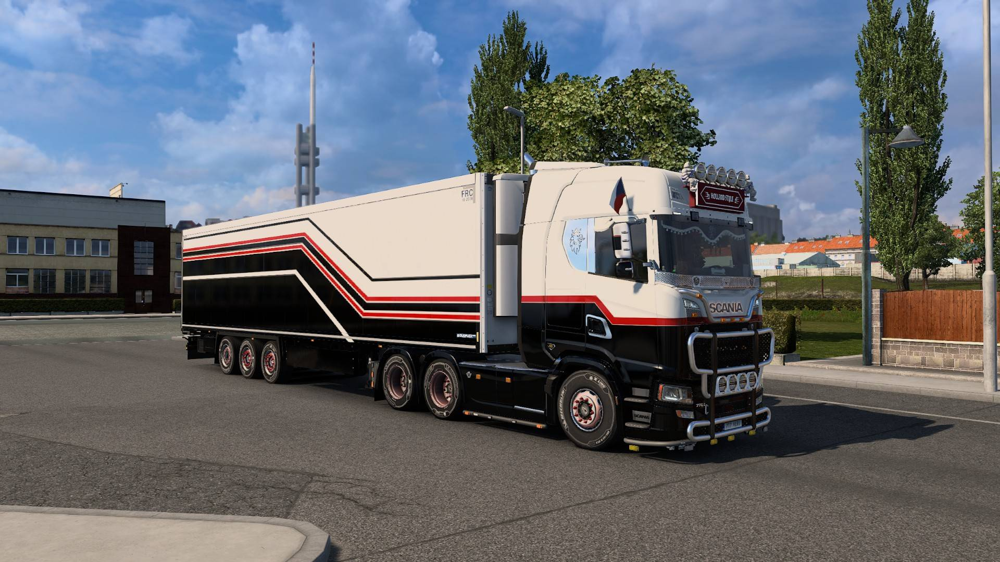

Založeno 28. 2. 2026
Virtuální firma pro ETS2
Čáp Trans je virtuální dopravní společnost působící ve hře Euro Truck Simulator 2. Jsme parta přibližně 40 aktivních členů, které spojuje vášeň pro kamiony, společné konvoje a přátelská atmosféra.
Naší prioritou je dobrá nálada, respekt mezi členy a zábava při společném hraní. Pravidelně pořádáme konvoje, účastníme se komunitních akcí a společně budujeme silnou a aktivní firmu.
